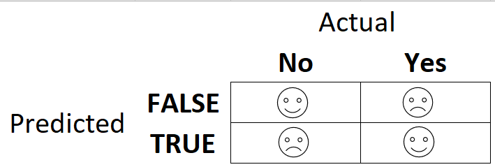

The output from a logistic regression model is (at least initially) an estimated probability, \(p\). In this lecture we consider the conversion of \(p\) to class prediction.
Data Loading, Cleaning, and Preparation
Load Titanic Data from the titanic package.
# load the datatitanic = titanic::titanic_train# factor conversion and recodingtitanic = titanic %>%mutate(Survived =as_factor(Survived)) %>%mutate(Survived =fct_recode(Survived, "No"="0", "Yes"="1" )) %>%mutate(Pclass =as_factor(Pclass)) %>%mutate(Sex =as_factor(Sex)) %>%select(-PassengerId, -Name, -Ticket, -Fare, -Cabin, -Embarked)# imputationset.seed(1234) #sets seed for random number generatorimp_age =mice(titanic, m=5, method='pmm', printFlag=FALSE)#m is the number of imputations, 5 is a reasonable value as a default#pmm is "predictive mean matching" = imputation method for numeric data#printFlag reduces amount of outputtitanic_complete =complete(imp_age) # view the cleaned and prepared datasummary(titanic_complete)
Survived Pclass Sex Age SibSp
No :549 1:216 male :577 Min. : 0.42 Min. :0.000
Yes:342 2:184 female:314 1st Qu.:19.00 1st Qu.:0.000
3:491 Median :28.00 Median :0.000
Mean :29.32 Mean :0.523
3rd Qu.:39.00 3rd Qu.:1.000
Max. :80.00 Max. :8.000
Parch
Min. :0.0000
1st Qu.:0.0000
Median :0.0000
Mean :0.3816
3rd Qu.:0.0000
Max. :6.0000
A Logistic Regression Model
Last time we built the logistic regression model shown below. This model featured Pclass, Sex, and Age to predict Survived.
mod3 =glm(Survived ~ Pclass + Sex + Age , titanic_complete, family ="binomial")summary(mod3)
Call:
glm(formula = Survived ~ Pclass + Sex + Age, family = "binomial",
data = titanic_complete)
Coefficients:
Estimate Std. Error z value Pr(>|z|)
(Intercept) 1.001405 0.312100 3.209 0.00133 **
Pclass2 -1.178727 0.260274 -4.529 5.93e-06 ***
Pclass3 -2.459637 0.249514 -9.858 < 2e-16 ***
Sexfemale 2.603539 0.187510 13.885 < 2e-16 ***
Age -0.033320 0.006525 -5.107 3.28e-07 ***
---
Signif. codes: 0 '***' 0.001 '**' 0.01 '*' 0.05 '.' 0.1 ' ' 1
(Dispersion parameter for binomial family taken to be 1)
Null deviance: 1186.66 on 890 degrees of freedom
Residual deviance: 799.17 on 886 degrees of freedom
AIC: 809.17
Number of Fisher Scoring iterations: 5
directionality of the slope
We then used this model to make predictions on several fake passengers.
Predictions (Probabilities)
Let’s make predictions on sample passenger. By setting type = “response” we are ensuring that we get a predicted probability.
newdata =data.frame(Sex ="male", Pclass ="3", Age =44)predict(mod3, newdata, type="response")
1
0.05096464
If we were forced to classify this passenger as survived or died, what would we pick?
Another passenger.
newdata =data.frame(Sex ="female", Pclass ="1", Age =10)predict(mod3, newdata, type="response")
1
0.9634466
If we were forced to classify this passenger as survived or died, what would we pick?
One more.
newdata =data.frame(Sex ="male", Pclass ="1", Age =29)predict(mod3, newdata, type="response")
1
0.5087801
If we were forced to classify this passenger as survived or died, what would we pick?
Converting to Class Predictions
In some applications a probability is not enough. We want to assign an observation to one of the two classes in our response variable. To do this, we need to convert the logistic regression probability estimate with probability thresholds. The default probability threshold is 0.5.
If an observation has a predicted probability greater than 0.5, we assign it to the positive class (Survived = “Yes” in the case of the Titanic data)
If an observation has a predicted probability less than 0.5, we assign it to the negative class (Survived = “No” in the case of the Titanic data)
We start by producing predicted probabilities for each row in the dataset.
Let’s talk about what this confusion matrix is telling us.

The rows in the confusion matrix correspond to our predictions. The “TRUE” corresponds to observations with a probability greater than 0.5. These would be predicted “Yes” values in the Titanic dataset. The “FALSE” corresponds to observations with an estimated probability less than 0.5. These would be “No” values in the Titanic dataset.
The columns in the confusion matrix correspond to the actual (observed) values in the dataset.
Where are the correct predictions in the confusion matrix? How about the incorrect ones?
They survived and predicted that they would not survive.
Assessing the Quality of Predictions
We know that we can look at metrics like AIC and the significance of predictors to make some assessment of the quality of a logistic regression model. What other methods are there?
Accuracy is a key measure of the quality of our predictions (once we have converted our probability estimates to class predictions). Accuracy is simply the number of correct predictions divided by the total number of predictions.
For the Titanic example above:
# nrow is a function that gives the number of rows in a dataset(470+241)/nrow(titanic_complete)